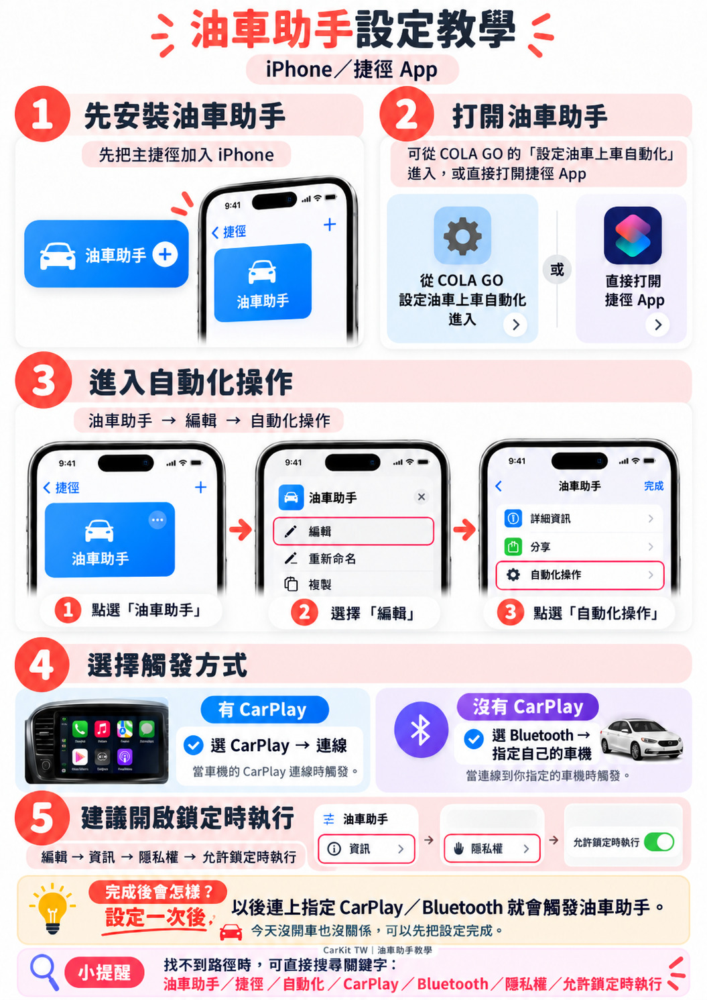

油車助手
v1.3：保留神盾並新增極行，另有導航、路況、停車／找車、加油／eTag、音樂等日常入口。
已驗證：v1.3 iPhone 實機正常，神盾／極行可開啟，其他原功能保留
待實車：CarPlay／Bluetooth 上車自動觸發、不同品牌車機相容性
上車自動啟動：安裝後在「捷徑」App 打開「油車助手」→ 編輯 → 自動化 → 新增 CarPlay「連線」；沒有 CarPlay 時可改用 Bluetooth 並指定自己的車機。設定一次後，以後連上車子就會觸發。
下載油車助手 v1.3（正式檔）
設定油車上車自動化已安裝後點這裡，直接打開油車助手
